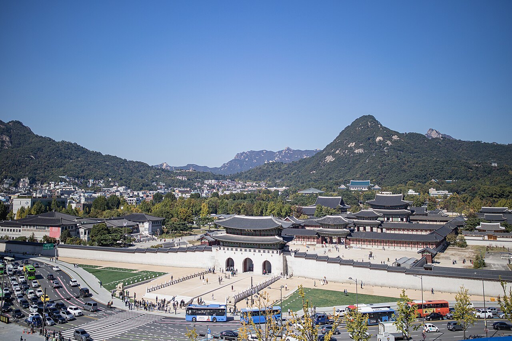
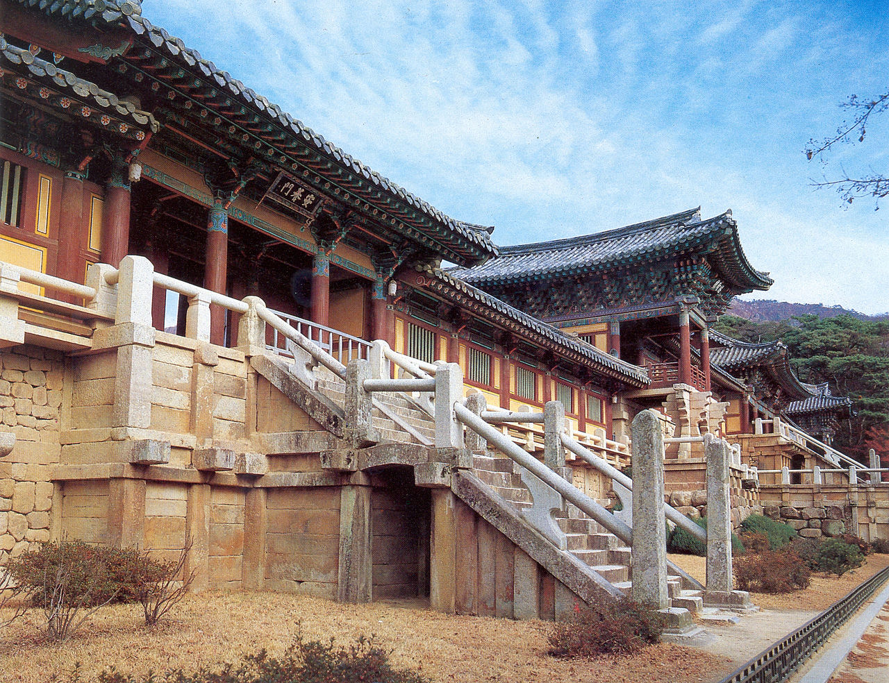

WORLD HERITAGE

🏛
UNESCO
세계 문화유산 여행
인류가 남긴 위대한 유산을 찾아서
중학교 역사/문화
·
정의
📖 세계 문화유산이란?
World Heritage Site
유네스코(UNESCO)가 인류 전체를 위해 보호해야 할 탁월한 보편적 가치(Outstanding Universal Value)가 있다고 인정한 문화적, 자연적 유산을 말합니다.
2024년 기준, 전 세계 168개국에 걸쳐 총 1,199건의 세계유산이 등재되어 있습니다. 이 중 문화유산 933건, 자연유산 227건, 복합유산 39건으로 구성됩니다.
한국
🏯 한국의 문화유산: 경복궁

🏯경복궁
경복궁 주요 정보
- 1395년(태조 4년) 조선 건국 후 최초의 궁궐로 창건
- 조선 왕조의 법궁(정궁)으로 약 500년간 사용
- 근정전, 경회루, 향원정 등 뛰어난 건축미를 자랑
- 일제강점기에 대부분 파괴, 현재 복원 진행 중
- 연간 방문객 약 500만 명의 대표적 관광 명소
한국
🛕 석굴암과 불국사
1995년 유네스코 세계문화유산 등재

🛕불국사
핵심 가치
- 신라 경덕왕(751년) 때 김대성이 창건
- 석굴암 본존불상은 동아시아 불교 조각의 걸작
- 불국사의 다보탑, 석가탑은 신라 석조미술의 정수
- 과학적 설계와 예술적 아름다움의 조화
아시아
🌏 아시아의 문화유산
🇰🇭
앙코르 와트
캄보디아. 12세기 크메르 제국이 건설한 세계 최대의 종교 건축물
🇮🇳
타지마할
인도. 무굴 황제 샤자한이 왕비를 위해 건설한 백색 대리석 영묘
🇨🇳
만리장성
중국. 약 2만 km에 달하는 세계 최장의 방어 성벽
🇯🇵
히메지 성
일본. '백로성'이라 불리는 일본 성곽 건축의 최고 걸작
유럽
🏛 유럽의 문화유산
로마 콜로세움 - 고대 로마 건축의 상징

🏛콜로세움
콜로세움 (Colosseum), 로마, 이탈리아 — 서기 80년 완공 (출처: Wikimedia)
약 5만 명을 수용할 수 있었던 원형 경기장으로, 로마 제국의 건축 기술과 문화를 보여주는 대표적 유산입니다.
보존
🔐 문화유산 보존의 중요성
- 역사적 정체성: 우리 민족과 인류의 역사를 증명하는 살아있는 기록
- 교육적 가치: 과거의 기술, 예술, 사상을 직접 체험하며 배울 수 있는 교실
- 경제적 효과: 관광 산업의 핵심 자원으로 지역 경제 활성화에 기여
- 문화 다양성: 각 문화권의 고유한 가치를 보존하여 세계 문화의 풍요로움 유지
등재 절차
📋 등재 기준과 절차
유네스코 세계유산 등재까지의 과정
- 잠정목록 등록 — 각국 정부가 후보 유산을 잠정목록에 등록
- 등재 신청서 제출 — 최소 1년 전 세계유산센터에 신청서 접수
- 전문기관 현지 조사 — ICOMOS(문화) 또는 IUCN(자연)이 현지 실사
- 세계유산위원회 심의 — 21개국 위원으로 구성된 위원회의 최종 결정
한국은 현재 16건의 세계유산을 보유하고 있으며, 잠정목록에도 다수의 후보가 등록되어 있습니다.
위기 유산
⚠ 위험에 처한 문화유산
| 위협 요인 | 사례 | 피해 규모 |
|---|---|---|
| 전쟁/분쟁 | 시리아 팔미라 유적 | IS에 의한 주요 신전 파괴 |
| 기후변화 | 베네치아 (이탈리아) | 해수면 상승으로 침수 위험 증가 |
| 관광 과밀 | 마추픽추 (페루) | 연간 150만 방문객으로 훼손 가속 |
| 자연재해 | 네팔 카트만두 계곡 | 2015년 대지진으로 사원 다수 붕괴 |
마무리
🌍
우리가 할 수 있는 일
문화유산은 과거의 기록이자 미래 세대를 위한 선물입니다
- 문화유산 방문 시 규칙을 지키고 보존에 협력하기
- 우리 지역의 문화유산에 관심을 갖고 알리기
- 문화유산 보호 캠페인이나 봉사활동에 참여하기